DVMRP
Naive Algorithm: Flooding
Recall that the goal of multicast routing: We have a packet whose destination is a group, and the routers need to work together to forward this packet to all members of the group.
The most naive way to implement this is flooding. When a router receives a packet, it simply forwards the packet out of every port (except the incoming port).

Why does flooding work? It ensures that every host on the network receives the packet, and that will include all members of the desired group.
What’s good about flooding? It’s conceptually simple, and doesn’t require running any routing protocols.
What are some problems with flooding? There are two major problems, which we’ll solve one at a time:
-
Flooding wastes bandwidth sending the same data along multiple paths, when that data only needed to be sent along one path.
-
Flooding wastes bandwidth sending the packet to non-members.
Also, loops can cause broadcast storms where the same packet is forwarded infinitely in a loop, though this can be solved by having routers discard a packet if they’ve seen it before.
Reverse Path Broadcasting (RPB)
Let’s focus on the first problem for now. (Note: This means that for now, we’ll still be sending the multicast packet to everybody, including non-members. We’ll solve that problem later.)
Flooding correctly sends the packet to everybody, but it wastes data sending data along redundant links. For example, if there are many paths between R1 and R4, flooding will cause copies of the packet to travel along every path from R1 to R4. Then, R4 will discard all the duplicate copies of the packet.
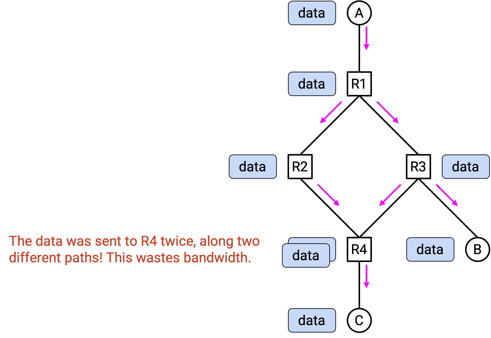
Ideally, we’d like the packet to travel along a single path from R1 to R4, and likewise between any other pair of routers.
We’d like packets to take only a single path between any pair of nodes. What data structure does this remind you of? Trees have a single path between any pair of nodes!
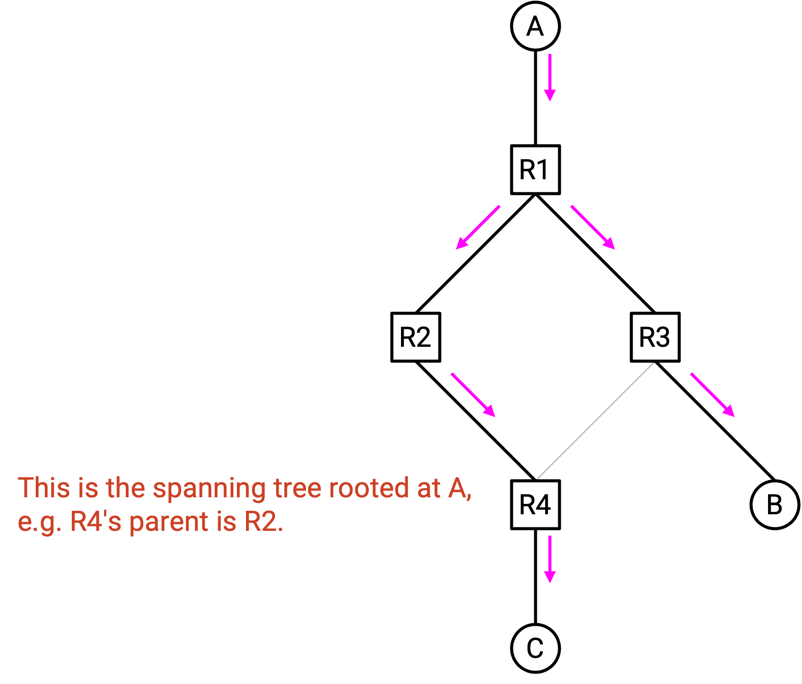
Specifically, we want to build a spanning tree, so that everyone receives the packet along a single path only.
We could build a spanning tree from scratch, but we could be more clever and reuse some work that we’ve already done. Where have we already seen spanning trees?
When we ran distance-vector routing for unicast packets, we built a spanning tree pointing toward the destination. This allowed all packets to flow “upwards” in the network graph, toward the single destination (the root of the tree).
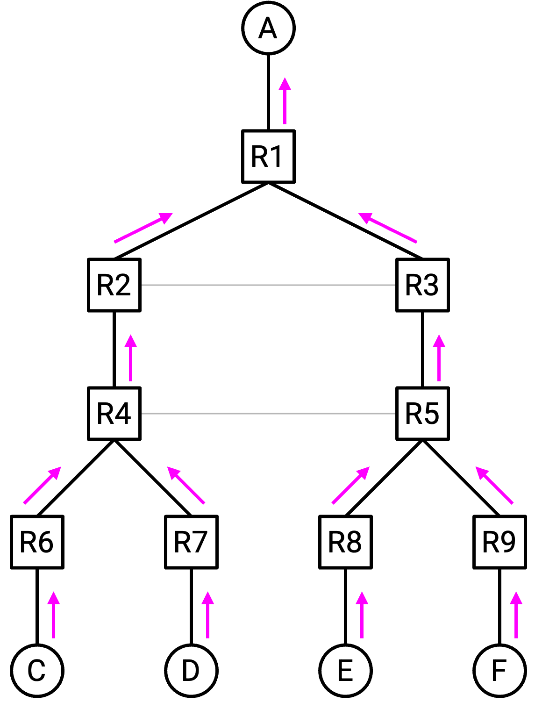
If we took this graph and just reversed all the arrows, we now have a suitable spanning tree for multicast packets. The root of the tree is now the sender, and copies of the packet flow “downwards” in the network graph, away from the sender and through the network to reach every destination.
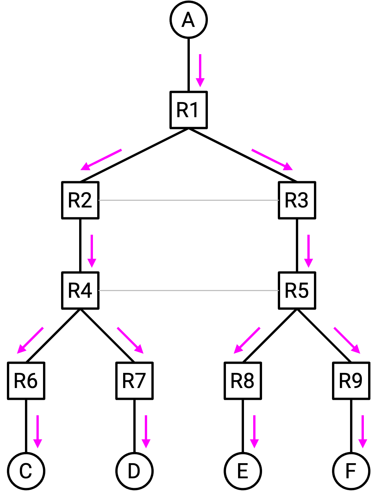
At this point, thinking about reversed arrows can be confusing, so let’s switch to using some less confusing terminology. In the tree of routers, every router has exactly one parent, and zero or more children. The router at the “top” of the tree is the root, and routers at the “bottom” of the tree with no children are called leaves. (These are the same definitions that you’re probably used to from any data structures course. Nothing special about them.)
When we thought about unicast routing, the root was the destination. Everyone receives packets from their children, and forwards their packets to their parents, “upwards” toward the destination.
By contrast, when we think about multicast routing, the root is the source. Everyone receives packets from their parent, and forwards their packets to their children, “downwards” through the network to reach every destination.
In summary, the forwarding rule for multicast routing is: If you get a packet from your parent, send it to all your children. Otherwise, if you get a packet from someone else (not your parent), drop the packet.
This rule helps us avoid packets getting sent along multiple paths. Even if there are multiple paths to you, you will only receive the packet from your parent (and forward it to your children) a single time. If you receive another copy of the packet from someone else (not your parent), you’ll drop the packet.
RPM: Learning Your Parent and Children
How do we actually implement this rule? Each router needs to know about its parent, and all of its children.
Figuring out your parent is easy. Remember that this tree is exactly the same as the tree from distance-vector for unicast routing. In your unicast forwarding table, your next-hop to the root is your parent! To determine your parent, you can just reuse the forwarding table entry you computed for unicast routing.
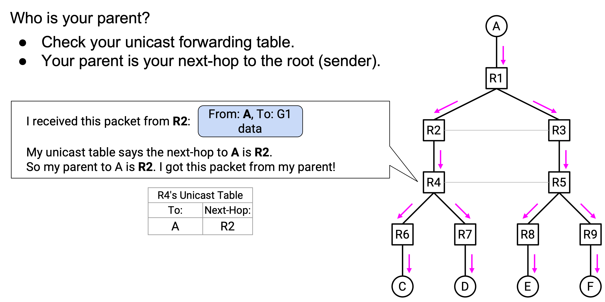
Figuring out your children takes a bit more work. The forwarding table only tells you about your parent (next-hop, toward the root), but the forwarding table has no information about your children (previous-hop, away from the root).
Since you don’t know about your children, you need your children to tell you who they are. Specifically, everybody sends multicast routing advertisements to their parents saying: “I am your child (in the tree rooted at A).” (Remember that everybody knows their parents from their unicast forwarding table.)
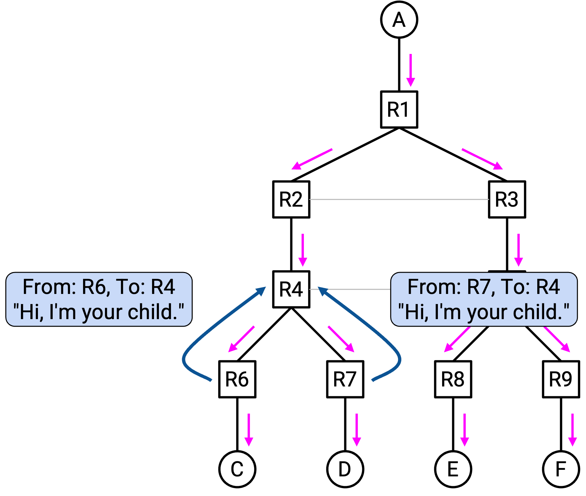
Then, every router receives these advertisements and stores additional information about who their children are. This is new information that we’ve added specifically for multicast routing. This new multicast forwarding table is separate from the forwarding table we used in unicast routing (and for determining parents).
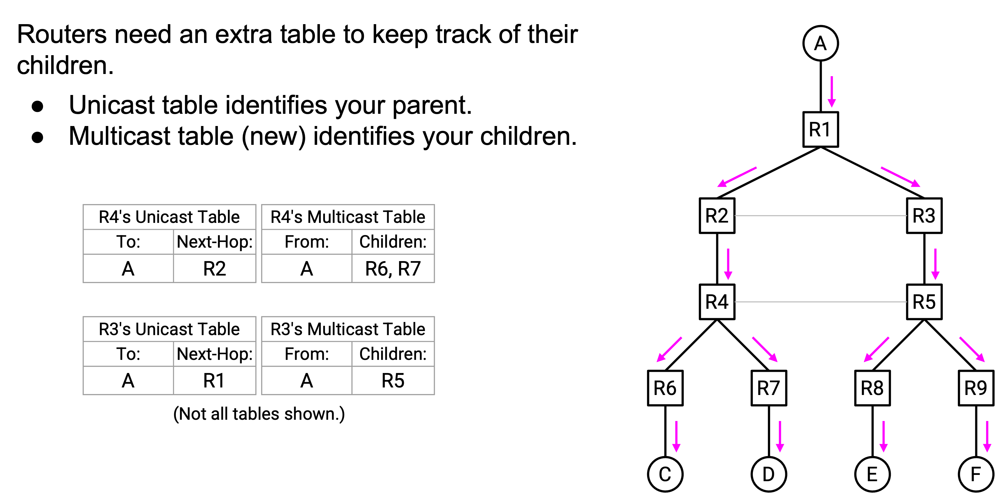
In summary, the forwarding rule for multicast is implemented like this. When you receive a packet, use the unicast forwarding table (which lists your parent) to check if the packet is from your parent. If the packet is from your parent, use the new multicast forwarding table (containing advertisements from your children) to forward it to your children.
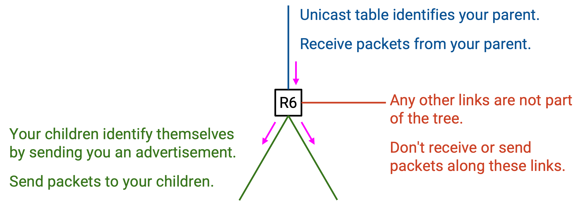
Now that we have two forwarding tables, let’s stop and think about how each one is used. The unicast forwarding table lists your parents. This table is used for unicasting packets toward their destinations, as in standard distance-vector routing. This table is also used for checking if a multicast packet came from your parent. Finally, this table is used to send multicast routing advertisements to tell your parents “I am your child.”
The multicast forwarding table lists your children. This table is constructed by receiving advertisements from your children. This table is used to forward multicast packets to all of your children.
One last, but important, observation: In distance-vector unicast routing, we built one spanning tree for every destination. As a result, our unicast forwarding table has one next-hop for every destination. In other words, for each destination, you have a parent for that particular tree.
When we reverse the arrows, we now end up with one spanning tree for every source. Our multicast forwarding table has a list of children for each different source. In other words, a multicast forwarding table entry can be interpreted as: “If you receive a packet from source A, forward it to children R6, R7.”
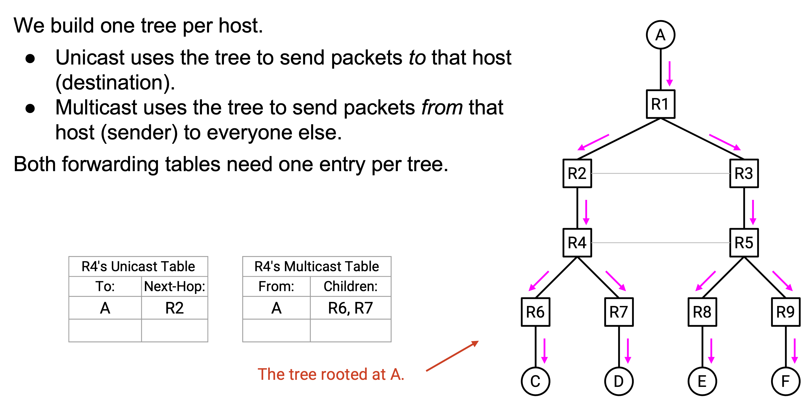
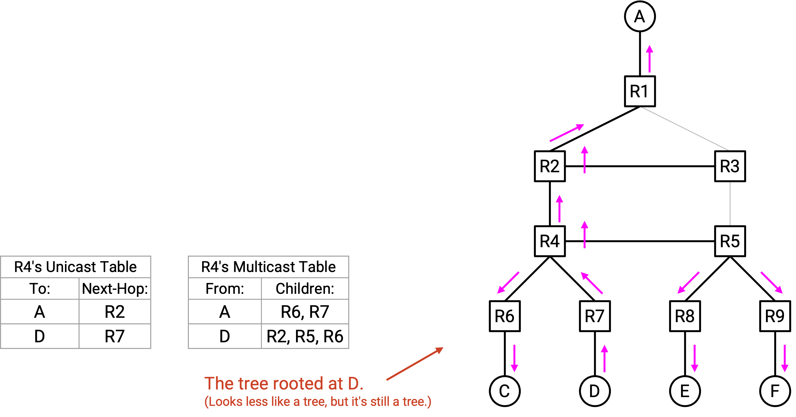
Reverse Path Multicasting (RPM): Pruning
Our Reverse Path Broadcasting rule ensured that packets travel along a spanning tree, starting at the source (the root) and traveling “downwards” through the network to all destinations. Using a tree solved our first problem (packets taking multiple paths and wasting bandwidth).
However, we still have the second problem to solve. So far, our packets are still being broadcast to everybody, including hosts who are not in the group. This wastes bandwidth.
To solve this, we will prune the tree by cutting off any branches where there are no group members.
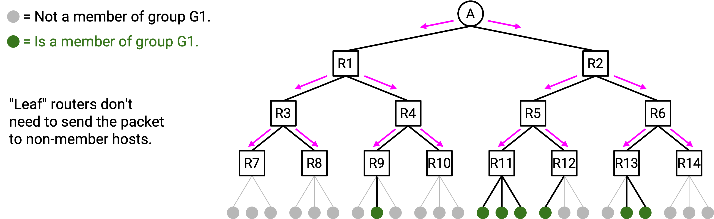
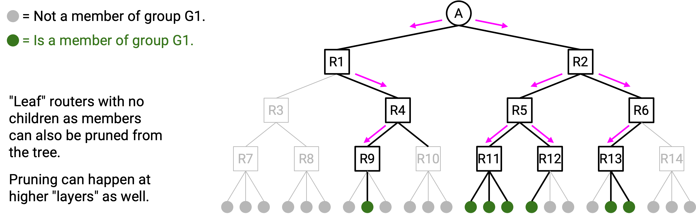
Pruning propagates from children to their parents. Suppose you are R5, and you are directly connected to 3 hosts. Using IGMP (i.e. talking to those hosts), you learn that none of them are in the group. This means that there’s no reason for you to be part of this tree.
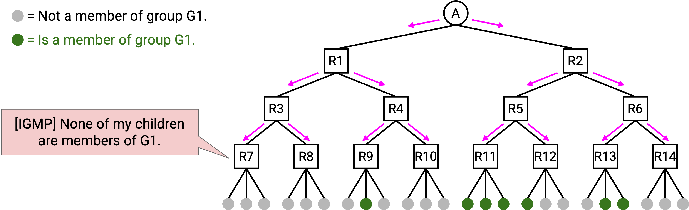
You can send an advertisement to your parent: “I am your child, but none of my descendants are involved in this group, so don’t send me data packets.” Your parent can then update their multicast forwarding table entry accordingly, so that you are no longer one of the children. Note that pruning messages are only sent to your direct parent (they’re not forwarded any further).
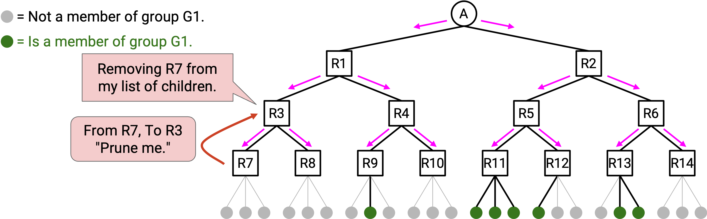
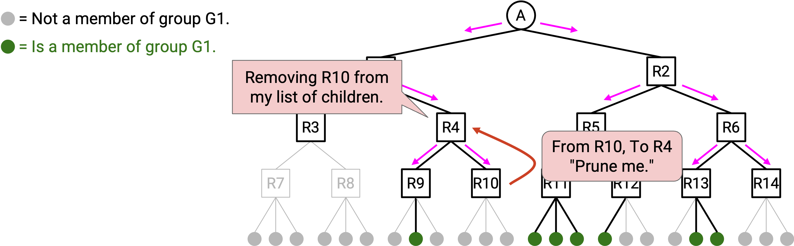
Pruning can happen at higher levels of the tree as well. Consider R3, a router with 2 children. Suppose both children send pruning advertisements, saying that they’re not involved in this group. If none of your children are involved in this group, then there’s no reason for you to be involved in this group either. Therefore, you can remove yourself from this tree as well. You can do this by sending a pruning advertisement to your parent, so that your parent stops sending you data packets.
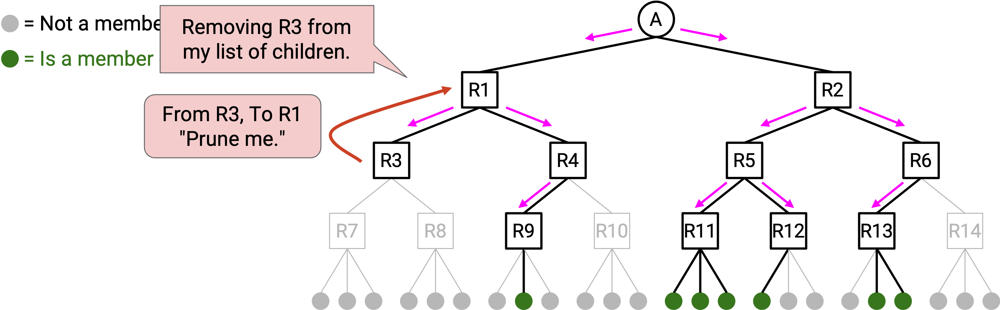
Note: Routers at higher levels could have both children routers and directly-connected hosts. In this case, the router can only remove themselves from the tree if all their children send pruning advertisements, and all their directly-connected hosts are not part of this group.
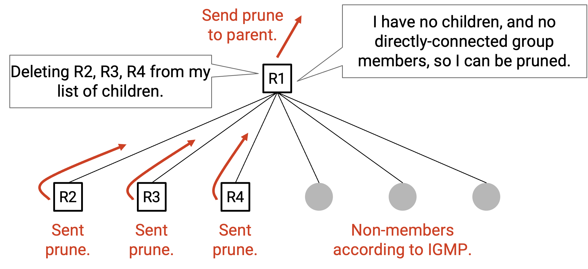
Pruning makes our multicast forwarding tables a little more complicated. So far, each entry maps a source to a list of children: “If you receive a packet from source A, forward it to children R11, R12.” However, the list of children now also depends on the destination group. For example, maybe R11 and R2 both have descendants belonging to group G1. But, only R11 has descendants belonging to group G2 (i.e. R12 has sent you a prune message).
To fix this, our multicast forwarding table must have one entry per source, per group. For example: “If you receive a packet from source A to group G1, forward it to children R11, R12.”
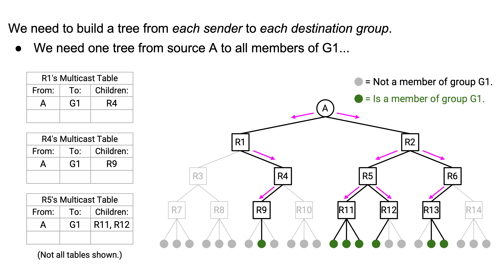
Another separate entry would be: “If you receive a packet from source A to group G2, forward it to child R11.”
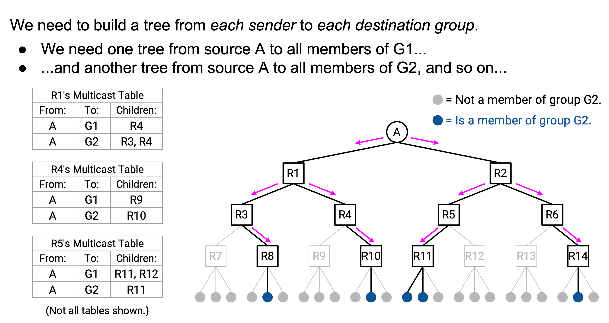
Another way to think about this modification: Previously, we had one tree per source, showing how that source sends multicast packets to everyone else. However, we are now cutting off tree branches depending on the destination group. Therefore, we need one tree per source, per destination group.
One final note: It’s possible that none of your children currently belong to a group, but some time later, one of your descendants decides to join the group. To fix this problem, every router will periodically clear all of its pruning information, so that nobody is pruned anymore. This causes everyone to revert to the original RPB behavior, where you always forward to all your children.
This way, if one of your descendants has joined a group, then after the timer expires, you are no longer pruned and you have re-joined the tree. On the other hand, if it’s still the case that none of your descendants belong to the group, you can just send another pruning message to your parent, so that you are removed from the tree again.
Summary of DVMRP Rules
Routing Rules:
For each source’s spanning tree, you need to learn your parents and your children.
-
Learning your parents: No action needed. Your unicast forwarding table already identifies your parent.
-
Learning your children: Everyone sends an advertisement to their parent. When you receive these advertisements, you learn who your children are.
Forwarding Rules:
-
When you receive a packet, use the unicast forwarding table for the given source to check if the packet is from your parent.
-
If the packet is from your parent, use the new multicast forwarding table to forward it to your children. Only forward to the non-pruned children for the given destination.
-
Otherwise, if the packet is not from your parent, then just drop the packet.
Pruning Rules:
For each (destination group, source) pair:
-
If you receive a pruning message from a child, remove that child from your multicast forwarding table entry for this destination group.
-
If none of your descendants (directly-connected hosts or children) belong to this group, send a pruning message to your parent.
-
Periodically clear all pruning information (revert to forwarding to all children).
DVMRP Pros and Cons
What’s bad about this routing protocol?
Pruning information is periodically cleared. When that happens, packets end up getting broadcast to everybody again, until pruning converges again (Recall that without pruning, packets were getting sent to everybody.)
Forwarding tables scale poorly. The multicast forwarding table needs one entry per source, per destination group.
What’s good about this routing protocol?
DVMRP is a simple, elegant extension to an existing routing protocol (distance-vector). We were able to elegantly reuse the unicast forwarding table to help us implement DVMRP. For example, we didn’t have to think hard about how to identify our parent, because it was already done for us.
Because we reused the delivery trees from the distance-vector protocol, the trees we produced are also least-cost trees. In other words, they give us the best path from the sender to all group members. This property is why we say that IP multicasting is optimal: in other words, DVMRP achieves the best possible performance, in terms of the costs in the network topology.
One downside of coupling multicast and unicast routing is that switching protocols is harder. For example, if we switched our unicast routing protocol from distance-vector to link-state, we would have to rethink our multicast routing protocol as well.